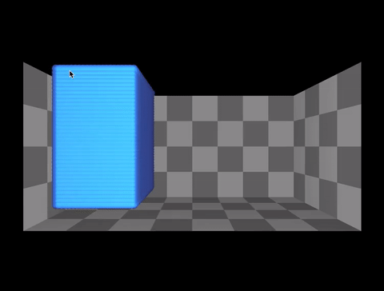

At this point in our fluid simulation project, we have set up our GUI with a "tank" filled with particles suspended in the air. At the moment, the particles fall to the floor of the tank and collapse on one another. We have much to do still in terms of implementing the Position Based Fluid simulation based on the paper by Macklin and Mueller, which will consist of adding loops to our algorithm to compute the particle density functions that determine the position of groups of particles in relation to one another. We decided to use a pre-made GUI as a starting point for our project, since our priary goal was really to implement the physics of the fluid simulation. For this reason, we are using the GUI and OpenCL framework from Dillon Yao's fluid simulator project, which conveniently has a basic GUI set up for testing our physics simulation and encapsulates all of the physics functions in a separate .cl file. We are replacing the .cl file with our own, so that we can implement the physics on our own and then focus on meeting our stretch goals.
|

|
This week, we first searched for various papers and academic articles to get a survey of different methods of fluid simulations. Some of the popular methods we encountered were the Boltzmann Equations, Navier-Stokes equations, Smoothed Particle Hydrodynamics, and Position-Based Fluid Dynamics. Each method was fairly unique and required a wholly different implementation, but certain implementations we found used multiple methods, such as combining Position-Based Fluid Dynamics with Smoothed Particle Hydrodynamics for pressure constraints. We also found various helpful slide decks and tutorials that will allow us to better understand the concrete computational implementations of the above methods.
In our initial proposal, we foresaw having to work more on the GUI; but now that we are working from the one made by Dillon we hope to make the physics implementation and some of our stretch goals, like implementing different shaders and simulating a lidui surface using a triangle mesh, the bulk of our project work. We have also decided to work with OpenCL to speed up our simulation, since this is a part of the structure of Dillon Yao's project that we are working from, and it will provide us a convenient way to implement our physics functions in a single .cl file (this will require us to become acquainted with this open-source GPU programming framework).
The following video summarizes our findings this week:
For our final project, we plan to create an accurate particle based fluid simulation. Extending the concepts we learned from creating a spring-based cloth simulation, we plan to design a fluid model that mimics the properties fluids like water in various containers and scenarios.
In Project 4 of this class we studied how to simulate cloth using points and springs, which led us to an interest in simulating fluid, which has many applications including video games. We thought that the physics mechanisms behind the cloth and fluid could be intertwined. Furthermore, in our own experiences we’ve seen the implementation of fluids like water in various games like TF2 or COD. It is interesting to see how to create a water-like material that interacts with light even when the particles are moving. There are many other applications of this, for example, in real world simulators, or visualizing environmental issues like understanding how sun's irradiance could interact with water sources on earth due to a damaged ozone layer. We believe there may be challenges in replicating the exact physics behind each water particle and in being able to ensure accurate interactions between light and the water molecules to a fine degree. However, we think using a familiar approach, like creating segments of 3D volume that are affected by springs and forces, can give us a decent approximation. Additionally, self-collision with water would be an interesting feature to analyze. We could attempt to create a gradient of colors for the water particles and as they collide observe how the colors mix and change. Overall, this will be an exciting topic to explore.
Through this project, we hope to obtain an accurate simulation of various fluids in a variety of different scenes. More specifically, we aim to successfully perform the following tasks in order to call our project a success:
We will attempt to create simulations of moving water–whether starting as a falling body or as a resting body subject to a perturbation–in various different scenes. These scenes include, but are not limited to, water falling into a cube-like structure, water falling into a cup/pitcher, or a dam being released. We hope that this also challenges us to render surfaces that act as the basis for our simulations. For our team, a successful project would be to create at least two different scenes with accurate particle simulation and writing.
If we are able to successfully achieve our primary goals, we aim to do the following:
We hope to extend our simulation to larger bodies of water, which has different properties as shown in the NVIDIA link provided in the Resources section. We also hope to accelerate our simulation renders if possible to get experience with various acceleration structures.
We plan to create multiple video demos and/or GIFs based on pre-computed simulations, hosted on YouTube and on our project webpage. In order to determine the success/quality of our simulations, we plan on comparing simple rendering scenarios with online videos to get a rough measure of accuracy. If we are able to reach our stretch goal of accelerating our simulation renders, we hope to include quantitative graphs demonstrating the speedup achieved.
With roughly 4 weeks to complete this project, we plan to break the tasks up in the following phases:
The above schedule accounts for meeting our primary project goals. If the major work phases (1 and 2) go well, we can on our stretch goals in the third week before finally developing our demos and presentation.
For mathematical models and algorithms for position-based fluid simulation, "Position Based Fluids" by Macklin and Mueller
For different approaches and conceptual reference, these lecture slides on position based fluids from the Chalmers University of Technology
For conceptual help and writeup structuring, this "FluidSimulator" project by former CS 284 students and this 3D Position Based Fluid Simulation project by former CS 184 students
For stretch goals: Chapter from GPU Gems on rendering large bodies of water with Nvidia GPU, as well as the student projects above